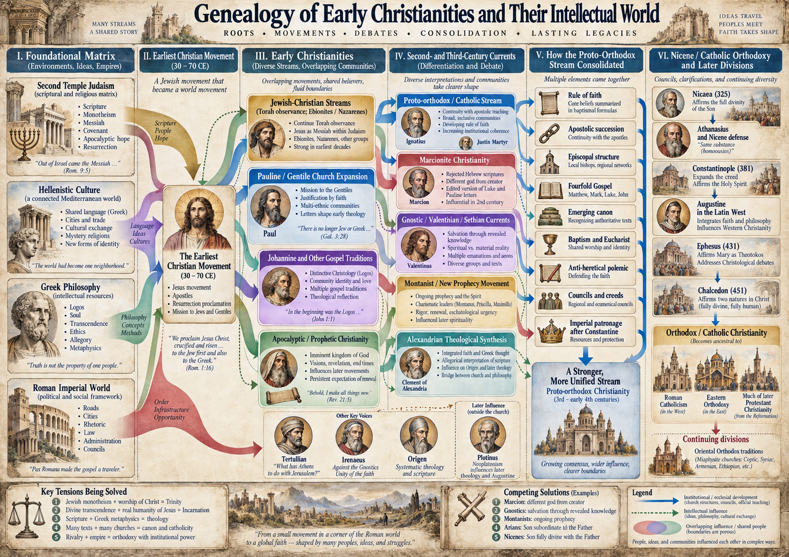
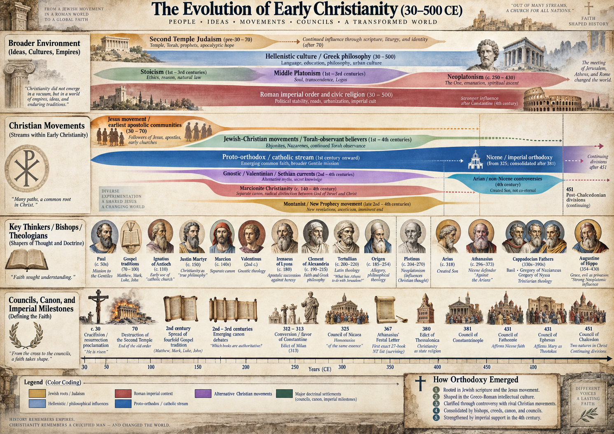
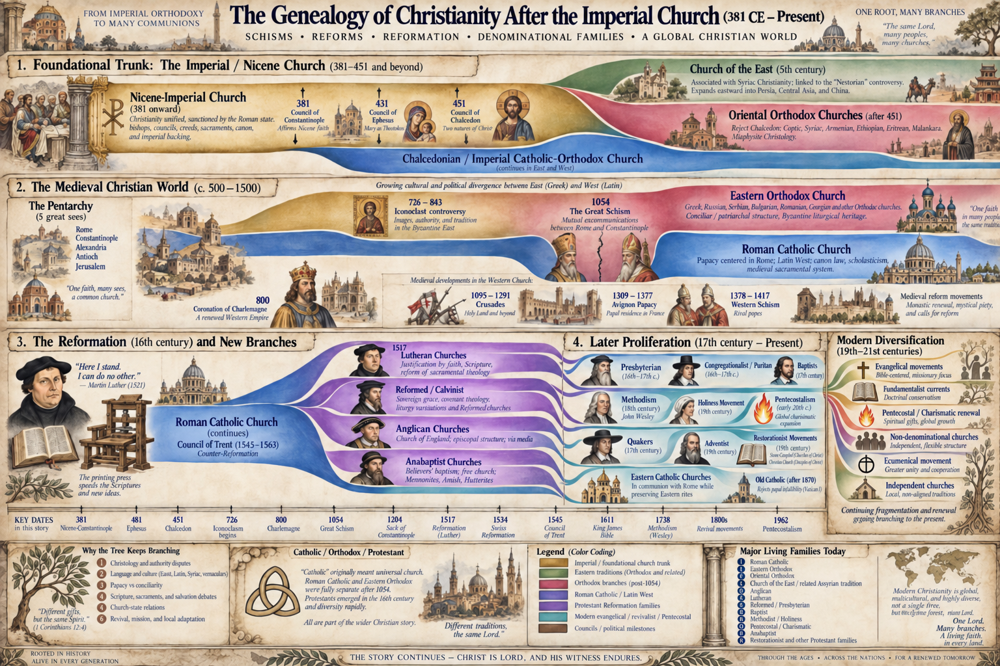
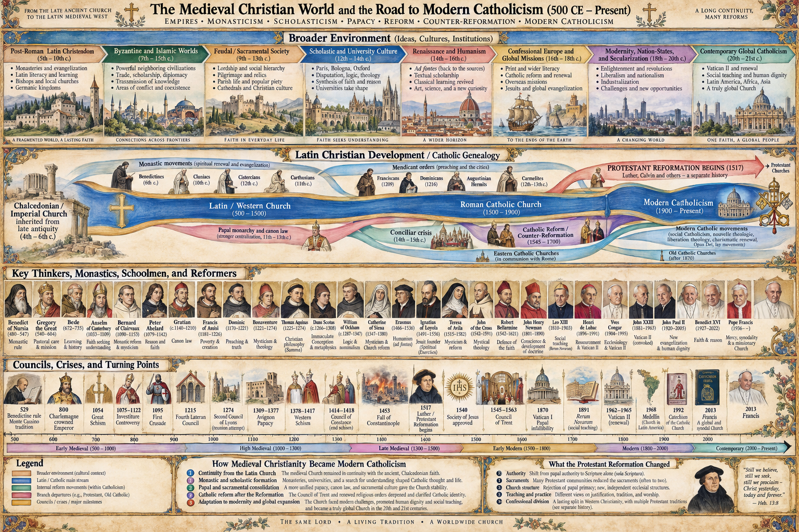
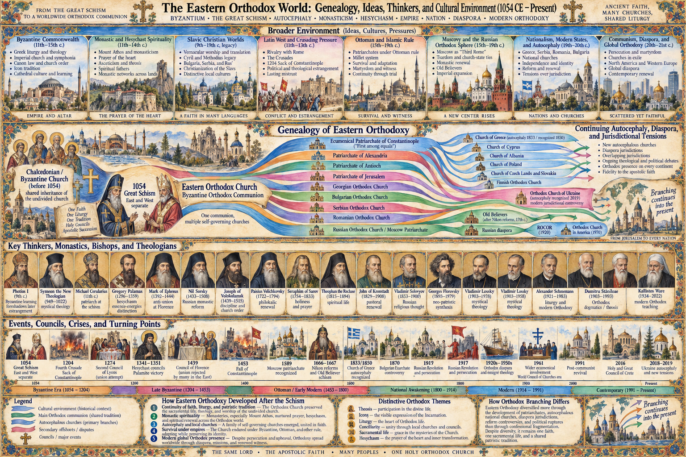
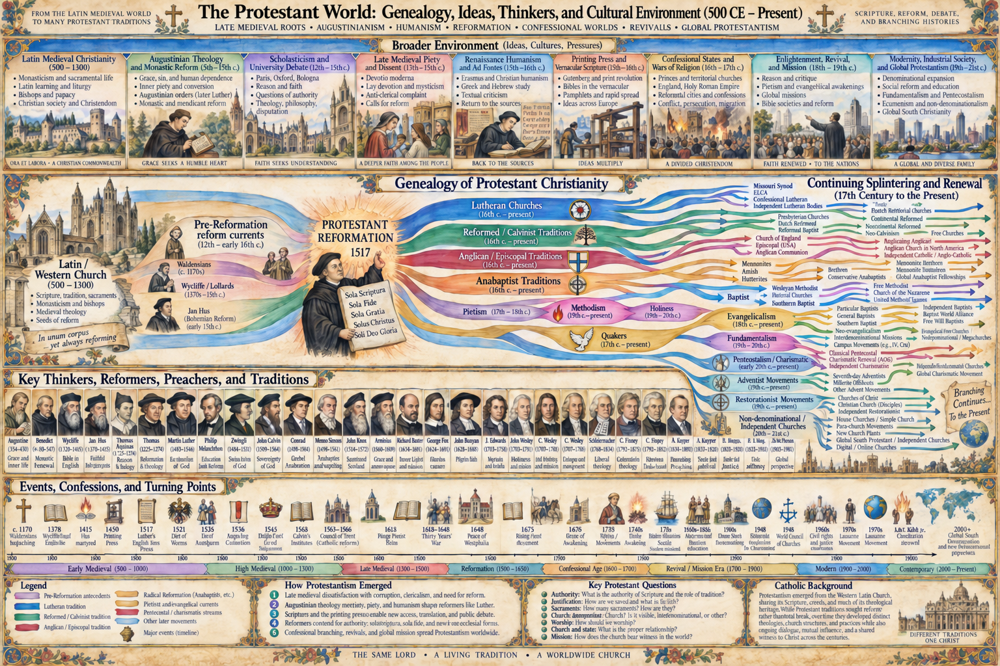

A Provenance-Based Generative Methodology for Evaluating Historical Evidence
Introduction
Historical inquiry is often described as the interpretation of surviving evidence concerning past events. That description is correct but incomplete because it can encourage the impression that historians begin with a body of “evidence” already given in a relatively transparent form and merely ask what it implies. In reality, the surviving material available to historians is itself the product of history.
A document available to a modern researcher may be the terminal output of a long sequence involving perception, interpretation, memory, oral communication, composition, editing, copying, translation, institutional selection, accidental survival, deliberate preservation, ideological suppression, scholarly reconstruction, and modern interpretation. Archaeological evidence likewise passes through processes of deposition, disturbance, preservation, excavation, classification, and interpretation. The historian therefore confronts not the past itself, but a historically generated dataset.
The central methodological principle of this framework is:
Before a surviving source can be used to explain the past, the historical process that generated, transformed, selected, transmitted, and preserved that source must itself become part of the explanation.
This approach may be called a provenance-based generative methodology for historical evidence. It combines traditional source criticism with concepts drawn from data provenance, data lineage, causal inference, archival theory, sociology, political economy, information theory, and probabilistic reasoning. Its purpose is neither maximal skepticism nor credulous acceptance, but calibrated historical inference.
Table of Contents
- I. Epistemic Foundations
- II. Claim Decomposition and Hypothesis Specification
- III. Source-Level Criticism
- IV. Data Provenance and Historical Lineage
- V. The Social and Cultural Data-Generating Environment
- VI. Selection, Preservation, and Archival Formation
- VII. Evidential Quality as a Multidimensional Vector
- VIII. Comparative and Probabilistic Inference
- IX. A Practical Analytical Workflow
- X. Common Analytical Errors
- XI. Applied Examples
- XII. Toward a Historical Evidence Architecture
- XIII. Core Methodological Principles
- Conclusion
I. Epistemic Foundations
A. Past events and surviving observations
Historical events are not directly available to researchers. What survives are traces: texts, inscriptions, artifacts, architecture, human remains, coins, administrative records, oral traditions, artistic representations, and later historical narratives. These traces are not identical with the events from which they arose.
A useful abstraction is:
$$ H \rightarrow D $$
where (H) is some historical state, event, or process and (D) is the surviving data. Historical reasoning attempts to infer (H) from (D), but the connection is rarely direct. A more realistic representation is:
$$ H \rightarrow P \rightarrow I \rightarrow M \rightarrow C \rightarrow T \rightarrow R \rightarrow S \rightarrow D $$
Here the intermediate stages might include perception, interpretation, memory, communication, textualization, replication or redaction, and selection or survival. The historian observes only the downstream product. At minimum, therefore, historical inquiry must distinguish the event or condition itself, the process that generated surviving traces, and the modern interpretation of those traces.
This prevents event-data collapse: the treatment of a surviving representation as though it were simply the historical event rendered into words.
$$ \text{surviving statement} \neq \text{historical event} $$
That distinction is not skepticism for its own sake. It is recognition that historical information is mediated.
B. Historical sources as generated data
A historical source should be understood as something produced by a process. Different production processes generate different kinds of error and preserve different kinds of information. A triumphal inscription commissioned by a king and a quartermaster's inventory from the same campaign may be equally authentic and contemporary, yet they are generated by very different institutional needs.
The triumphal inscription may be shaped by royal ideology, expectations of kingship, commemorative convention, public legitimacy, and propaganda. The logistical record may instead be shaped by accounting conventions, bureaucratic incentives, clerical mistakes, and administrative routines. The proper question is therefore not simply, “Which source is more trustworthy?” but which data-generating process is likely to preserve which kinds of information accurately?
A royal inscription may be poor evidence for casualty figures but excellent evidence for political ideology. An inventory may be strong evidence for resource consumption but weak evidence for symbolic meaning. Historical quality is therefore domain-specific rather than global.
C. Evidence as a product of transformation
Information can change as it moves through a historical system. Some transformations are intentional—translation, editing, adaptation, propaganda, harmonization, abbreviation—while others are unintentional, such as memory distortion, scribal error, physical damage, linguistic drift, and misunderstanding.
Transformations need not always degrade information. A later historian may preserve earlier archival material now lost to us. A translator may clarify an otherwise inaccessible source. The relevant task is therefore not simply to locate an “original source,” but to reconstruct the sequence of transformations connecting the surviving record to the underlying event and to ask what each transformation may have preserved, obscured, or altered.
D. Epistemic symmetry
The framework requires epistemic symmetry. Historical claims should not receive different evidential standards merely because they belong to different traditions or because the researcher finds their conclusions attractive or unattractive. Egyptian royal inscriptions, Roman imperial propaganda, Christian texts, Jewish texts, Greek miracle narratives, Mesopotamian omens, medieval chronicles, and modern memoirs all require source-sensitive analysis.
This does not mean treating all genres identically. A tax register and an epic poem are generated by different systems and therefore require different analytic expectations. Epistemic symmetry means that the governing principle remains constant:
Evaluate the mechanism connecting the source to the proposition, not the ideological desirability of the proposition.
A scholar who readily sociologizes a rival tradition but suspends equivalent analysis for a preferred tradition introduces an asymmetry requiring justification. The reverse error—automatically discounting religious evidence while treating political memoirs naïvely—is equally problematic.
E. Calibrated rather than maximal skepticism
Historical inquiry cannot demand certainty. A rule such as “no proposition should be accepted without multiple independent contemporary eyewitnesses” would eliminate enormous portions of ancient history. Historical inference instead works in degrees: evidence may make a proposition substantially more likely, somewhat more likely, approximately unchanged, somewhat less likely, or substantially less likely.
This is compatible with ordinary historical judgments such as strongly supported, probable, plausible, possible, underdetermined, doubtful, and unsupported. The aim is calibration: weak evidence should not be treated as decisive, but neither should unattainable standards of proof be imposed on fragmentary ancient datasets.
II. Claim Decomposition and Hypothesis Specification
A. Why claims must be decomposed
Historical disputes often become confused because several propositions are compressed into a single sentence. Suppose an ancient text says that a king received a message from a god before battle. This may involve at least six distinguishable propositions: a surviving text contains the claim; its author intended readers to believe it; the king publicly claimed divine communication; the king sincerely believed he experienced divine communication; the king underwent an unusual subjective experience; an external supernatural agent actually communicated with him.
These propositions are not epistemically interchangeable. Evidence strongly supporting one may provide little support for another. Rigorous analysis therefore begins by decomposing the claim into discrete propositions.
B. Observation statements and historical hypotheses
A useful distinction is between an observation statement and a historical hypothesis. “Manuscript M contains sentence S” is an observation about the surviving record. “Event H occurred” is a historical hypothesis about the past. The first may be highly secure while the second remains uncertain. The inference connecting them must therefore be made explicit rather than concealed in ordinary language.
C. Define the target variable
Evidential quality is relational rather than intrinsic:
$$ Q(E,H) $$
where (E) is the evidence and (H) is the hypothesis under evaluation.
A royal inscription may be excellent evidence for official ideology, moderate evidence for the existence of a campaign, weak evidence for precise casualty figures, and very weak evidence for divine intervention. Asking whether a source is simply “reliable” therefore compresses several distinct questions. The better formulation is:
Reliable for what proposition?
D. Granularity and specificity
Historical propositions vary in granularity. Consider an execution narrative: one may ask whether a person existed, was arrested, was executed, died by a particular method, was condemned by a particular official, had the remains handled by a named individual, or was buried in a specific location. Evidence sufficient for the third proposition may be inadequate for the seventh.
The methodological rule is straightforward:
Increasing specificity increases evidential burden.
General contextual evidence may constrain broad possibilities without establishing highly specific event-level details.
E. Evidence for belief versus evidence for reality
A source can be powerful evidence that someone believed something while being much weaker evidence that the belief was true. An early text describing expectation of imminent cosmic transformation may strongly establish the existence of that expectation; it does not thereby establish that the cosmic event was actually imminent.
The same distinction applies across religious, political, and military contexts. A royal omen inscription may be excellent evidence for the role of omen interpretation in kingship without being comparable evidence for supernatural causation. Historians must avoid silently converting evidence for belief into evidence for the object of belief.
F. Testimony and nested claims
Testimony frequently has a nested structure. If an author says, “Three hundred soldiers told me they saw the god appear,” the surviving datum is not three hundred surviving testimonies. It is one author reporting that three hundred people made a claim.
The structure is:
$$ \text{surviving author} \rightarrow \text{reported witnesses} \rightarrow \text{alleged event} $$
Each arrow requires separate evaluation: Did the people exist? Did they make the statement? Did the author hear them directly? Were their experiences independent? Did they use the same interpretation? What did “appearance” mean in that cultural setting? The numerical size of the group cannot simply be treated as the number of independent testimonies available to the historian.
G. Information, evidence, and evidential inertia
The word evidence can be used broadly, so that almost any relevant datum qualifies, or more strictly, so that a statement counts as evidence only when some justified relationship connects it to the proposition. The terminology matters less than the underlying distinction.
An anonymous medieval chronicle may claim that an event occurred a thousand years earlier. If no information pathway connects the chronicler to the ancient event, the statement may be informative about medieval tradition while contributing almost nothing to the ancient proposition. In that sense, it is evidentially inert with respect to the original event.
A useful formalization is:
$$ P(E\mid H) \approx P(E\mid \neg H) $$
If the same observation is about equally expected whether (H) is true or false, it has little discriminatory power. This explains why some impressive-sounding claims may contribute little once their provenance is examined.
III. Source-Level Criticism
A. Authorship
Authorship matters because it can affect access, temporal proximity, institutional position, personal involvement, and incentives. Yet authorship must itself be established. The historian should ask whether the source names its author, whether the attribution is original or later, whether external witnesses identify the author, whether linguistic evidence fits, whether pseudonymous writing was common in the genre, and whether authorship materially changes access to the event.
An important distinction follows:
$$ \text{authentic authorship} \not\Rightarrow \text{factual accuracy} $$
An authentic autobiography can exaggerate; an authentic royal inscription can propagandize; an authentic private letter can misunderstand. Authenticity establishes producer identity, not truth.
B. Dating
Dating affects the error structure of a source. Greater temporal proximity may imply fewer transmission stages, less opportunity for legendary development, more surviving participants, and greater possibility of contradiction by contemporaries. Yet proximity does not eliminate propaganda, confusion, strategic deception, ideological framing, or memory error. A commander may misinterpret a battle while it occurs; a propagandist may lie immediately; a later historian may accurately preserve earlier documents.
Dating therefore modifies evidential expectations. It does not mechanically determine reliability.
C. Provenance of information
One of the strongest source-critical questions is:
How did this information enter the source?
Possible pathways include direct observation, participation, interview, named informants, anonymous informants, official archives, earlier texts, oral tradition, rumor, inference, revelation, or literary borrowing. These pathways differ greatly in traceability.
A statement such as “I was present” provides more information about claimed access than “it is said,” but self-claimed eyewitness status itself remains a claim requiring evaluation. The task is to reconstruct the information pathway rather than merely label a source “primary” or “secondary.”
D. Access and opportunity to know
Source identity and source access are not the same thing. A court historian may understand diplomatic policy while knowing little about battlefield details; a soldier may know local combat but not imperial strategy; a priest may know ritual practice but not provincial administration; a later compiler may possess archival access unavailable to ordinary contemporaries.
The key question is:
Was this source structurally positioned to know this particular fact?
E. Genre
Genre establishes conventions that influence the expected relationship between language and reality. Administrative inventories, diplomatic letters, legal records, chronicles, victory inscriptions, epic poetry, biography, apocalypse, liturgy, hagiography, satire, and polemic do not generate information in the same way.
Genre affects acceptable exaggeration, symbolism, narrative compression, use of speeches, chronology, conventional motifs, and theological or ideological interpretation. It is not a binary truth detector. An epic can preserve real historical memories, while a bureaucratic document can contain false figures. Genre analysis identifies the kinds of transformations and distortions that are most plausible.
F. Rhetorical purpose
Texts are interventions in social situations. They may attempt to persuade, defend, accuse, authorize, commemorate, mobilize, glorify, instruct, negotiate, justify war, establish doctrine, or secure patronage. A productive question is:
What would success for this document have looked like?
A succession inscription may emphasize dynastic legitimacy; a polemical letter may exaggerate disagreement with rivals; a temple dedication may magnify divine favor. Purpose does not invalidate a source. It helps explain why the source looks the way it does.
G. Audience constraints
Claims are made to audiences, and audiences can constrain what authors can plausibly say. Relevant variables include geographic proximity, familiarity with the people involved, access to competing information, shared ideology, whether communication was public or private, and whether dissenters had incentives or opportunities to respond.
A claim addressed to an audience positioned to refute it may be somewhat more constrained than one made to distant admirers. But this principle must not be overstated. Audiences can be poorly informed, ideologically aligned, unable to investigate, or tolerant of exaggeration. “Someone could have checked” is not equivalent to “someone did check.”
H. Incentives and distortion
The question “Why would the author lie?” is too narrow. The more useful question is:
What incentive structure shaped the author's perception, memory, selection, and presentation?
Distortion can emerge through ideological commitment, social identity, patronage, fear, prestige, institutional loyalty, competition, reputation management, economic interest, or theological expectation. It need not involve conscious fabrication. Humans can sincerely interpret ambiguous events in ways favorable to prior beliefs, selectively remember events supporting current authority, or preserve traditions that reinforce community identity.
The relevant category is therefore distortion risk, not simply dishonesty.
I. Known and unknown incentives
Ancient incentive structures are often only partially recoverable. The appropriate judgment may simply be unknown. Researchers should resist turning “we cannot identify a motive to distort” into “therefore no motive existed.” Absence of evidence for motive is not evidence of absence, particularly when the surrounding social record is fragmentary.
J. Internal and external criticism
Internal criticism examines chronology, vocabulary, duplicated episodes, tensions between passages, ideological shifts, signs of interpolation, and possible composite authorship. These features do not automatically falsify a source; they may reveal layering, redaction, or development.
External criticism compares the source with archaeology, inscriptions, coins, geography, material culture, environmental data, administrative records, and independent narratives. Agreement can strengthen confidence when independence is genuine. Conflict can reveal error, exaggeration, chronological confusion, or different perspectives. External fit is especially useful where outside evidence constrains details the author would not easily have controlled.
IV. Data Provenance and Historical Lineage
A. Historical provenance
In data engineering, provenance describes where data came from and how it was transformed. Applied historically, provenance asks:
Where did this claim come from, and what happened to it before it reached us?
A typical lineage may look like:
$$ \text{event} \rightarrow \text{perception} \rightarrow \text{interpretation} \rightarrow \text{memory} \rightarrow \text{oral communication} \rightarrow \text{written source} \rightarrow \text{editing} \rightarrow \text{copying} \rightarrow \text{selection} \rightarrow \text{survival} \rightarrow \text{reconstruction} \rightarrow \text{translation} $$
Every arrow is a potential transformation point. Provenance analysis makes those transformations visible instead of treating the final text as a pristine observation.
B. Provenance as epistemic metadata
Ideally, a historical claim should carry metadata such as earliest known attestation, approximate date, authorship status, information source, genre, dependencies, manuscript history, institutional setting, and preservation history. Without this metadata, a reader can easily encounter an ancient statement as though it were a direct observation.
The function of provenance metadata is therefore epistemic: it prevents uncertainty about the source's history from disappearing when the claim is quoted.
C. Lineage as a graph
Historical information frequently branches and recombines. One source may feed several later sources; multiple earlier sources may be combined into a later compilation.
For example:
$$ A \rightarrow B $$
$$ A \rightarrow C $$
$$ B + C \rightarrow D $$
This structure is better represented as a directed acyclic graph (DAG) than as a simple chain. The graph model matters because evidential agreement depends on independence.
D. Correlated evidence
Suppose three later chronicles all report the same event but all derive from the same lost royal archive. They are not three independent confirmations. They are three downstream expressions of one information source.
Thus:
$$ \text{number of texts} \neq \text{number of independent information pathways} $$
This is analogous to duplicated data in a statistical dataset: three copies of the same record do not create three measurements. Historical analysis should therefore count information pathways, not merely documents.
E. Direct and indirect dependency
Dependency is not limited to literal copying. Two sources may share an oral tradition, teacher, liturgy, bureaucracy, propaganda system, archival source, or cultural script. The question “Did B copy A?” may therefore be too narrow. The broader question is:
What informational ancestors do A and B share?
F. Transformation operations
Each stage of lineage can be treated as a transformation operation: paraphrase, translation, expansion, abbreviation, harmonization, redaction, reinterpretation, interpolation, scribal normalization, or literary adaptation. Some transformations preserve semantic content while changing wording; others alter the meaning or emphasis.
The historian should therefore ask not only what the surviving version says, but what transformations were necessary for it to become this version and what each transformation plausibly did to the information.
G. Lifecycle modeling
A generalized lifecycle can be represented compactly:
| Stage | Function |
|---|---|
| T₀ | Underlying event or condition |
| T₁ | Immediate perception |
| T₂ | Interpretation through available concepts |
| T₃ | Memory formation |
| T₄ | Interpersonal or oral transmission |
| T₅ | Textual composition |
| T₆ | Editorial transformation |
| T₇ | Replication and derivative versions |
| T₈ | Institutional curation |
| T₉ | Differential preservation and loss |
| T₁₀ | Scholarly reconstruction |
| T₁₁ | Translation and publication |
| T₁₂ | Contemporary interpretation |
A major epistemic danger arises when the modern reader encounters T₁₂ and psychologically experiences it as though it were T₀.
H. Provenance collapse
This compression may be called provenance collapse. The modern reader sees “the king said,” “the prophet saw,” or “the witness reported” and experiences the sentence as nearly direct contact with an ancient moment. In reality, the statement may stand at the end of several uncertain transformations.
Provenance-aware analysis reopens that compressed pipeline.
I. Uncertainty propagation
Uncertainty at one stage can propagate downstream. If authorship, dating, source dependence, manuscript reconstruction, and interpretation are all uncertain, the final inference should reflect the cumulative structure of those uncertainties. Ancient history rarely permits defensible numerical multiplication of probabilities, but uncertainties should remain visible rather than disappearing as the analysis progresses.
V. The Social and Cultural Data-Generating Environment
A. Why source criticism is not enough
Even a perfectly reconstructed source must be situated within the environment that produced it. Historical actors do not interpret the world without conceptual mediation. They possess culturally learned categories for causation, agency, morality, disease, divinity, politics, identity, dreams, death, and authority.
Context is therefore not supplementary background added after reading the source. It is part of the causal mechanism that generated the source.
B. Cultural repertoires and hypothesis spaces
Every society supplies a repertoire of available explanations. An unexpected celestial event may be understood as an omen, divine judgment, royal legitimation, or natural phenomenon. An unusual dream may be interpreted as prophecy, ancestral communication, divine revelation, or psychological experience.
Historical actors do not sample randomly from every logically possible explanation. They disproportionately select from culturally available concepts. Accordingly, historical reasoning should ask how common and socially intelligible a particular category of explanation was.
Formally:
$$ P(E\mid C) $$
where (C) represents ordinary cultural mechanisms, may be much higher than a modern reader intuitively assumes. If a culture routinely produces revelation, omen, miracle, or prophecy claims, another such report is less diagnostically surprising.
C. Comparative claim ecology
Claims must be situated within their actual historical comparison class. A miracle report should be compared with other miracle traditions; a royal omen with contemporary omen systems; an apparition claim with surrounding beliefs about visions, dreams, resurrection, divine intervention, and apotheosis.
This does not establish that all claims in a category are false. It provides the correct baseline for assessing how unusual a particular report is and how readily ordinary cultural mechanisms could generate it.
D. Social identity
Groups generate and preserve information partly through identity maintenance. Stories may define insiders and outsiders, justify authority, explain suffering, establish moral norms, or connect present communities to a foundational past. Traditions performing important identity functions may become more stable and more frequently transmitted even without conscious fabrication.
Thus social usefulness can affect survival and narrative stability independently of factual accuracy.
E. Political and economic structures
Political systems shape information through monarchy, empire, bureaucracy, censorship, legal institutions, succession crises, warfare, and diplomacy. Economic structures shape it through literacy, scribal labor, writing materials, transportation, patronage, archives, and institutional wealth.
The result is epistemically important: the archive disproportionately represents groups with the resources to produce and preserve records. Rulers, temples, elites, and bureaucracies are often overrepresented relative to peasants, enslaved populations, itinerant laborers, and marginal groups. Economic inequality becomes archival inequality.
F. Institutional incentives
Institutions generate records according to their needs. A tax office produces information optimized for revenue collection; a temple for cultic administration and legitimacy; an army for command and logistics; a religious movement for doctrine, identity, worship, and authority. A useful question is:
What problem was this institution solving when it produced this record?
That question often explains both what a source records and what it omits.
G. Competition and authority
Competing dynasties, priesthoods, philosophical schools, religious teachers, political factions, and bureaucratic offices may produce claims strategically. Statements about lineage, revelation, succession, orthodoxy, legitimacy, or victory can function simultaneously as descriptions and as instruments of competition.
A claim's social function does not necessarily make it false, but it changes what kinds of distortion or emphasis should be expected.
H. Memory and oral transmission
Memory is reconstructive rather than mechanically reproductive. Later knowledge, narrative expectations, emotional salience, and social reinforcement can alter recollection. Confidence can increase while accuracy decreases, and collective memory may stabilize around socially meaningful narratives.
Oral transmission is similarly neither perfect preservation nor uncontrolled invention. Formulaic repetition may stabilize some information, while simplification, elaboration, conflation, narrative smoothing, and adaptation alter other information. The relevant question is therefore not simply “Was this oral?” but:
What kind of oral system existed, and what types of information was it good or poor at preserving?
I. Reflexivity and reactivity
Historical actors are participants in the systems generating the evidence. Beliefs can alter behavior; prophecies can influence decisions; rumors can change alliances; religious claims can generate movements that later preserve the claims themselves.
This creates reflexive loops such as:
$$ \text{belief} \rightarrow \text{behavior} \rightarrow \text{new evidence} \rightarrow \text{reinforced belief} $$
Historians must therefore remain alert to cases in which a belief helps create the later circumstances that appear to confirm it.
VI. Selection, Preservation, and Archival Formation
A. Selection begins before preservation
Not every event becomes a record. The first filter is production bias. Ancient societies were more likely to document taxation, law, warfare, diplomacy, property, elite activity, and religion than the routine lives of ordinary people. Limited literacy further means that written archives are structurally skewed toward particular classes, occupations, genders, and institutions.
Consequently, absence from the written record cannot automatically be interpreted as absence from historical reality.
B. Preservation bias
Not everything written survives. Survival depends upon material, climate, storage, copying, institutional continuity, language change, accident, and conflict. A stone monument, papyrus letter, cuneiform tablet, and repeatedly copied religious text have radically different survival probabilities.
The modern archive therefore reflects both what ancient people produced and what subsequent environments permitted to survive.
C. Institutional curation and canonization
Institutions actively shape the archive by deciding what to copy, preserve, catalog, cite, teach, and canonize. This does not require conspiracy. Routine institutional behavior is enough to produce powerful selection effects.
Canonization is an especially strong form of curation because canonical status increases copying, translation, commentary, teaching, and preservation. Noncanonical materials may consequently disappear at higher rates. Modern archival dominance therefore cannot automatically be projected backward as evidence of original numerical or ideological dominance.
D. Suppression and destruction
Some materials disappear deliberately through censorship, proscription, book burning, political purges, or doctrinal suppression. Such mechanisms must be demonstrated historically rather than assumed. The existence of censorship in one period does not justify inventing specific lost documents in another.
The proper inference is limited:
Documented suppression reduces confidence in archival completeness; it does not reveal what the missing documents said.
E. Survivorship bias and missing-not-at-random data
The archive is a selected sample because:
$$ P(\text{survival}\mid\text{source type}) $$
is not constant.
Royal inscriptions, tax records, private letters, canonical scriptures, dissident tracts, and oral traditions all have different probabilities of preservation. In statistical terms, the evidence resembles missing-not-at-random (MNAR) data: the probability that information is missing depends on properties of the source and the institutions surrounding it.
Suppose all surviving texts from a movement endorse doctrine X. Several processes could produce that observation: X may genuinely have been universal; X may have become dominant and its supporters preserved their texts; competing materials may have ceased to be copied; later institutions may have selectively transmitted one branch. The surviving distribution cannot automatically be equated with the original distribution.
F. Selection increases uncertainty, not knowledge of the missing
A crucial methodological restraint follows. From “the surviving record is biased,” one cannot infer “the missing record probably supported my reconstruction.” Selection bias justifies broader uncertainty, not imaginative reconstruction.
In practical terms:
Archival bias widens the confidence interval; it does not fill in the missing rows.
VII. Evidential Quality as a Multidimensional Vector
A. Why “reliability” is too crude
Calling a source “reliable” compresses multiple dimensions. A document may be textually well preserved but rhetorically biased, securely dated but dependent on poor informants, anonymous yet strongly corroborated, or authentically authored while narratively tendentious.
A better model treats evidential quality as a vector of attributes rather than a single score.
B. Evidential quality dimensions
| Dimension | Core question |
|---|---|
| Temporal proximity | How close is the source to the alleged event? |
| Authorship confidence | How securely is the producer identified? |
| Provenance traceability | Can the information pathway be reconstructed? |
| Access | Was the producer positioned to know? |
| Textual integrity | How confidently can the relevant wording be reconstructed? |
| Transmission distance | How many uncertain transformations intervene? |
| Independence | Is the source genuinely independent of other attestations? |
| Corroboration | Do external sources constrain the same proposition? |
| Genre fitness | Is the genre appropriate for the inference being attempted? |
| Rhetorical pressure | How strongly might persuasive goals shape presentation? |
| Incentive distortion risk | What incentives favored selective representation? |
| Audience constraint | Could contemporaries realistically challenge the claim? |
| Specificity | Is the proposition precise enough to evaluate? |
| Cultural-generation rate | How readily could this type of report arise in the surrounding culture? |
| Selection risk | How strongly has preservation filtered the evidence? |
| Contradictory evidence | Are significant countertraditions or conflicts preserved? |
These dimensions may be assessed qualitatively as high, medium, low, or unknown. The category unknown is essential. If an author's incentives cannot be reconstructed, the correct value is not “low distortion risk” but “unknown distortion risk.”
C. Avoid false precision
Numerical scoring can sometimes aid structured research, but values such as “73.4% reliable” create an appearance of measurement precision the historical record rarely supports. Ordinal categories or multidimensional profiles are often more defensible because they preserve uncertainty and reveal where the evidential bottlenecks actually lie.
D. Quality is hypothesis-relative
A ritual inscription may provide high-quality evidence for official cultic ideology, medium-quality evidence for institutional practice, and low-quality evidence for private belief. Accordingly:
$$ Q(E,H) $$
must remain explicit. Quality belongs to the relationship between evidence and hypothesis, not to the source in isolation.
E. Data quality is not truth
A perfectly preserved source can be wrong, and a badly preserved source can preserve accurate information. Data quality concerns confidence in what the source says and how it reached us; truth concerns whether the underlying proposition corresponds to historical reality.
Likewise, confidence can vary across nested hypotheses. If a secure document says, “We saw a sign in the sky,” one may have high confidence that the document contains the statement, moderate confidence that witnesses reported an unusual visual event, and much lower confidence in the interpretation that the event was supernatural.
VIII. Comparative and Probabilistic Inference
A. Evidence is comparative
Evidence becomes especially informative when competing hypotheses predict it differently. Suppose (H_1) and (H_2) are rival explanations. The relevant comparison is:
$$ \frac{P(E\mid H_1)}{P(E\mid H_2)} $$
The question is not simply whether (H_1) can explain the evidence. Many hypotheses can be made compatible with a given observation. The stronger question is:
Under which hypothesis would this evidence be more expected?
If both explanations predict the evidence at approximately the same rate, the observation contributes little discriminatory power.
B. Background models and priors
Likelihood judgments inevitably depend on background models. Military evidence requires knowledge of logistics, geography, command structures, and army organization. Religious evidence requires knowledge of testimony, visionary experience, ritual culture, group dynamics, and comparative religion.
These background assumptions cannot be eliminated. The methodological goal is to make them explicit, historically grounded, and open to criticism rather than allowing them to operate invisibly.
Some hypotheses also begin with different background plausibilities. Priors should therefore be informed by comparative history, known human behavior, institutional constraints, and material realities rather than arbitrary preference.
C. Plausibility versus actuality
A recurrent error is moving from “this could have happened” to “this probably happened.”
$$ P(E\mid H)>0 $$
means only that the evidence is compatible with (H). It does not show that (H) is the best explanation or even that it is more likely than its alternatives.
Background practices are useful because they establish contextual plausibility. If a legal procedure is independently known to exist, a narrative using that procedure becomes less anomalous. But a known practice does not prove that a particular individual underwent it. Contextual plausibility is not event-specific corroboration.
D. Alternative explanations
Historical analysis should resist false binaries such as “literally true or deliberately fabricated.” Reports may arise through sincere misunderstanding, memory distortion, rumor, social reinforcement, symbolic storytelling, theological reinterpretation, conventional motifs, selective reporting, literary borrowing, or combinations of these mechanisms.
Historical processes are frequently multicausal, and the appropriate explanation may involve several mechanisms operating simultaneously.
E. Avoid double counting
If sources A, B, and C all report event X but B and C depend upon A, treating all three as independent likelihood updates inflates the evidence. A provenance-aware representation is:
$$ A \rightarrow {B,C} $$
rather than:
$$ A + B + C $$
Dependency analysis should therefore precede cumulative evidential assessment.
F. Graded conclusions
The endpoint of analysis need not be “proven” or “disproven.” More useful conclusions include very strongly supported, well supported, more likely than not, plausible but uncertain, underdetermined, weakly supported, improbable, and unsupported. The vocabulary is secondary to preserving gradation and showing how the conclusion follows from the evidential structure.
IX. A Practical Analytical Workflow
The methodology can be operationalized as a repeatable workflow:
| Step | Task | Central question |
|---|---|---|
| 1. Specify the proposition | Define the target hypothesis narrowly. | What exactly is being evaluated? |
| 2. Record the surviving datum | Separate the observation from the inference. | What actually survives? |
| 3. Identify the source | Record date, authorship, genre, language, audience, and institutional context. | What kind of source is this? |
| 4. Reconstruct provenance | Map how information could have reached the producer. | How could the source know? |
| 5. Construct the lineage graph | Identify borrowing, shared traditions, redaction, and manuscript descent. | Which attestations are genuinely independent? |
| 6. Reconstruct the generative environment | Model culture, political economy, institutions, and available concepts. | What kind of world generated this claim? |
| 7. Model incentives | Identify individual, group, institutional, and political pressures. | What could shape presentation or interpretation? |
| 8. Model preservation | Analyze copying, archives, canonization, material survival, and loss. | Why does this source survive? |
| 9. Build the quality vector | Evaluate the evidential dimensions without premature aggregation. | Where are the strongest and weakest links? |
| 10. Generate competing explanations | Construct historically realistic alternatives. | What other processes could generate the datum? |
| 11. Compare expectations | Ask how expected the evidence is under each explanation. | Which hypothesis best discriminates the evidence? |
| 12. State a calibrated conclusion | Separate what is observed, inferred, assumed, and unknown. | What confidence is actually warranted? |
A strong historical conclusion should leave the inferential chain visible enough that another researcher can identify where disagreement lies: in the observation, the provenance model, the contextual assumptions, the dependency structure, or the final comparison among hypotheses.
X. Common Analytical Errors
The most frequent errors can be summarized compactly:
| Error | Faulty inference | Corrective principle |
|---|---|---|
| Text-event collapse | “The text says X; therefore X occurred.” | The statement is an observation requiring explanation. |
| Authorship-event collapse | “The genuine author says X; therefore X is true.” | Authenticity establishes identity, not accuracy. |
| Repetition-independence collapse | “Four texts say X; therefore four independent witnesses exist.” | Establish lineage before counting attestations. |
| Early-eyewitness collapse | “The tradition is early; therefore it is eyewitness testimony.” | Early is not the same as eyewitness, and eyewitness is not the same as accurate. |
| Sincerity-truth collapse | “The witness sincerely believed X; therefore X is true.” | Sincerity primarily supports a claim about mental state. |
| Absence-of-motive reasoning | “We know no reason to lie; therefore the source is trustworthy.” | Motives may be unknown, and distortion need not be conscious. |
| Circular credibility bootstrapping | A source authenticates itself through events known chiefly from that same source. | Independent justification cannot be manufactured by recycling the claim. |
| Canonical or archival unity | Later collection implies original independence or unity. | Collection history does not erase lineage. |
| Possibility-actuality confusion | “Practice P existed; therefore individual X experienced P.” | Background possibility is not event-specific evidence. |
| Missing-data reconstruction | “The archive is biased; therefore lost evidence supported my theory.” | Selection increases uncertainty; it does not reconstruct missing content. |
| Author-level reliability | “Is this author reliable?” | Reliability is usually claim-specific and domain-specific. |
| False binary explanation | “Either literally true or consciously invented.” | Numerous intermediate generative mechanisms exist. |
Two especially important shorthand corrections are:
$$ \text{early} \neq \text{eyewitness} $$
$$ \text{eyewitness} \neq \text{accurate} $$
XI. Applied Examples
A. A reported mass appearance in an ancient religious text
Suppose one surviving author reports that a religious figure appeared to several hundred people. A superficial representation is “hundreds of eyewitnesses attest the event.” A provenance-sensitive representation is “one surviving source reports the existence of several hundred witnesses.” Those descriptions correspond to radically different evidential structures.
The claim should be decomposed into at least the following possibilities: the surviving text contains the numerical claim; the author personally believed it; the author inherited it from an earlier tradition; the alleged group existed; members of the group independently reported an experience; they interpreted the experience similarly; an external event corresponding to the religious interpretation occurred.
The source-critical questions then become concrete: Who authored the text? How close is it to the alleged event? Does the author identify the origin of the numerical claim? Are any witnesses individually identifiable? Do independent accounts survive? What did “appearance” mean within the relevant culture? Were visionary claims culturally common? Does the number perform rhetorical work? Could the original audience realistically verify it?
The central methodological point is that the number contained inside a report is not the same thing as the number of independently surviving evidential pathways.
B. Burial of an executed person in Roman Judea
Suppose a narrative claims that a particular executed person was released for burial and placed in a specific tomb. A weak analysis asks only whether Roman authorities ever permitted burial. If the answer is yes, the narrative may then be treated as historically secure. But this confuses possibility with actuality.
The proposition should instead be decomposed: the person died; the body was disposed of; burial occurred; burial occurred promptly; a particular individual requested the body; a particular official granted the request; the body was placed in a specific tomb.
General Roman practice may inform the plausibility of the earlier propositions, while local Jewish burial customs may modify those background probabilities. Neither independently establishes the later, more specific claims. Conversely, evidence that some crucified individuals were exposed or dishonorably disposed of does not establish that this particular person suffered that fate.
The method therefore blocks two symmetrical errors: “burial was possible, therefore this burial happened” and “dishonorable disposal was common, therefore this person must have received it.”
C. A Pauline autobiographical claim
Suppose a letter attributed to Paul says that he met particular early leaders of the Jesus movement. The analysis should distinguish: the text contains the claim; the text is authentically Pauline; Paul intended the statement literally; the meeting occurred; the meeting occurred substantially as described; the named individuals supplied Paul with particular traditions; those traditions accurately describe still earlier events.
Even if Pauline authorship is accepted, the downstream propositions remain inferential. An authentic letter establishes that Paul made the statement. It does not independently verify the meeting, nor does the existence of the meeting establish what information was exchanged.
Thus:
$$ \text{authenticity} \not\Rightarrow \text{event verification} $$
and:
$$ \text{meeting} \not\Rightarrow \text{specific information transfer} $$
The example demonstrates why hidden inferential steps should be decomposed rather than treated as one continuous evidential leap.
D. The Battle of Kadesh
The Battle of Kadesh is useful because contemporary evidence survives, yet contemporaneity does not eliminate the need for generative analysis. Egyptian monumental accounts present Ramesses II heroically. A naïve approach might reason that a contemporary inscription is therefore a direct and trustworthy military report.
A generative analysis instead asks who commissioned the inscription, what political function royal victory narratives served, what conventions governed Egyptian kingship, what admitting defeat would have meant, where the inscription was displayed, what audience it targeted, what Hittite evidence survives, and what subsequent diplomacy implies about the strategic outcome.
The Egyptian record may therefore be excellent evidence for Ramesside royal self-presentation, useful evidence for the existence and participants of the campaign, and much less decisive regarding exact tactical outcomes. Contemporaneity does not neutralize rhetoric, ideology, or institutional purpose.
E. Homer and the Trojan War
The Homeric poems illustrate extreme lineage distance. Relevant questions include the historical period depicted, the date at which the surviving literary form stabilized, the oral traditions that may precede it, which elements plausibly preserve older memories, which reflect later institutions, what genre conventions shape the narrative, and what archaeological evidence exists independently.
The proposition “a major conflict occurred at or near Late Bronze Age Troy” is very different from “the Iliad accurately narrates that conflict.” The same source can have meaningful evidential value for the former while being inappropriate as straightforward eyewitness documentation of the latter.
F. Royal inscriptions and administrative records
Suppose a king proclaims, “All surrounding lands submitted to me,” while contemporary administrative records document unpaid tribute, frontier conflict, rebellious vassals, and continued military deployments. The sources need not simply be classified as one true and one false.
The royal inscription may accurately reveal political ideology, ceremonial rhetoric, and dynastic aspiration; the administrative archive may better reveal routine governance and unresolved resistance. The apparent contradiction partly dissolves once the target proposition is specified. Different source types illuminate different variables.
G. Mesopotamian omen literature
Suppose a royal archive records celestial omens associated with political events. A modern reader might ask whether the omen predicted the event. A provenance-based analysis instead asks when the omen was recorded, whether the interpretation preceded or followed the event, how broad the symbolic categories were, how failed predictions were handled, what incentives scribes had to connect celestial events with royal concerns, and what role divination played in decision-making.
The analysis may therefore shift from a crude binary question—“Was the omen supernatural?”—toward a richer historical one: how did omen systems generate, interpret, preserve, and operationalize predictions within the political institutions of the time?
H. Christian Specific Timeline Reasoning
Early Christian Geneology

Early Christian Evolution

Medieval Christian Evolution

Medieval Christian to Modern Catholicism

Medieval Christian to Modern Orthodoxy

Medieval Christian to Modern Protestantism

XII. Toward a Historical Evidence Architecture
The methodology can be operationalized as an information architecture in which claims, sources, provenance, context, and inference are stored separately but linked.
| Component | Function |
|---|---|
| Claim registry | Stores discrete propositions independently of the documents that mention them. |
| Source registry | Stores date, authorship, genre, language, provenance, institutional origin, and manuscript status. |
| Evidence edges | Links sources to claims through relationships such as directly reports, implies, contradicts, contextualizes, paraphrases, or depends upon. |
| Lineage graph | Represents informational ancestry and prevents dependent sources from being counted as independent. |
| Context layer | Stores political, economic, religious, institutional, and communicative conditions surrounding source production. |
| Preservation layer | Records copying, archival retention, canonization, destruction, accidental loss, and material survivorship. |
| Quality vector | Assesses the source-claim relationship across proximity, access, independence, corroboration, rhetorical pressure, distortion risk, and related dimensions. |
| Inference layer | Compares competing hypotheses only after the preceding structure has been represented. |
The key architectural insight is that quality attaches primarily to the relationship between a source and a claim, not simply to a source as a whole. One document may strongly support one proposition while weakly supporting another.
The full structure can be summarized as:
$$ \boxed{ \text{Claim} + \text{Source} + \text{Provenance} + \text{Lineage} + \text{Generative Context} + \text{Selection Process} + \text{Quality Profile} \rightarrow \text{Calibrated Historical Inference} } $$
XIII. Core Methodological Principles
The framework can be compressed into the following governing principles without losing their interdependence:
- Historical sources are generated data, not transparent windows onto events.
- The existence of a statement and the truth of the statement are separate propositions.
- Evidence is hypothesis-relative; the same source can be strong evidence for one claim and weak evidence for another.
- Compound claims should be decomposed before evaluation, because apparently simple conclusions often hide multiple inferential steps.
- Authenticity, antiquity, eyewitness status, sincerity, and factual accuracy are distinct variables.
- Temporal proximity matters because it affects the information pathway, not because early sources are automatically true.
- Provenance should be reconstructed wherever possible: historians should ask how information entered the source and what transformations followed.
- Source dependence reduces effective evidential independence; count information pathways rather than documents.
- Transmission is transformational: memory, oral tradition, copying, editing, translation, and redaction can preserve some information while altering other information.
- Context is causal, not decorative. Cultural, political, religious, economic, and institutional systems help generate claims.
- Historical actors interpret experience using culturally available categories; therefore the surrounding claim ecology affects how surprising a report should be.
- Sincerity is not equivalent to factual accuracy, and distortion need not be deliberate.
- The archive is a non-random sample shaped by production, preservation, institutional curation, canonization, accidental loss, and sometimes deliberate destruction.
- Survivorship bias increases uncertainty but does not reveal the contents of missing evidence.
- Reliability should generally be assessed claim by claim and domain by domain rather than author by author.
- Data quality is multidimensional and should not normally be collapsed into a single scalar score.
- Unknown must remain unknown; missing information should not be converted silently into favorable assumptions.
- General plausibility does not establish particular actuality.
- Historical explanations should be comparative: the relevant question is not merely whether one hypothesis can explain the evidence, but whether it explains it better than plausible alternatives.
- Correlated evidence should not be double counted, and historical conclusions should remain graded in proportion to the quality and structure of the evidence.
- The modern form of a source is the endpoint of a lineage, not the beginning of inquiry.
- The surviving source itself requires historical explanation before it can responsibly be used to explain the past.
Conclusion
The central mistake this methodology seeks to prevent is provenance collapse: the psychological compression of a long and uncertain historical lineage into the impression that the modern reader is encountering an ancient event directly.
The naïve model is:
$$ \text{ancient text says X} \rightarrow X $$
A provenance-based model is:
$$ \text{surviving datum} \rightarrow \text{claim decomposition} \rightarrow \text{source criticism} \rightarrow \text{provenance reconstruction} \rightarrow \text{lineage analysis} \rightarrow \text{generative-context analysis} \rightarrow \text{selection analysis} \rightarrow \text{quality assessment} \rightarrow \text{comparative explanation} \rightarrow \text{calibrated historical confidence} $$
The surviving document is therefore not merely evidence about history. It is itself a historical phenomenon. Its language, structure, institutional location, transmission, survival, and modern form all require explanation.
This perspective changes the basic questions of historical analysis. Instead of asking only “What does this text say?”, the researcher asks: What process generated this text? What information pathway connects it to the event? What transformations occurred along the way? What social world made this claim intelligible? Why did this version survive? What other processes could generate the same observation? How much should this datum actually change confidence in the proposition under investigation?
Once those questions are incorporated, historical reasoning becomes less vulnerable to naïve literalism, indiscriminate skepticism, double counting, survivorship bias, false independence, and hidden inferential leaps. The result is not certainty, but something more useful: a transparent, auditable, and calibrated account of why a particular historical conclusion deserves the degree of confidence assigned to it.